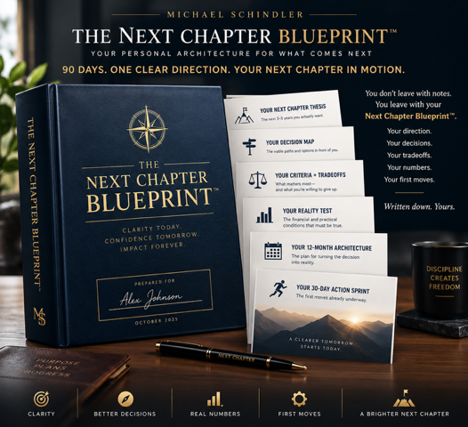

PROGRAMS
START WITH THE DECISION IN FRONT OF YOU.
Whether you already know the decision—or simply know something needs to change—there’s a place to start.
SOMETHING NEEDS
TO BE DECIDED.
MAYBE YOU’RE HERE BECAUSE…
DECISION CLARITY
ASSESSMENT
MODERATE
START HERE
NOT SURE WHAT’S ACTUALLY KEEPING YOU STUCK?
The 3-minute Decision Clarity Assessment shows you where you’re clear, where you’re stuck, and what’s worth considering as you think through next steps.
100% PRIVATE • NO CREDIT CARD • TAKES 3 MINUTES
CHOOSE YOUR PATH
THREE WAYS FORWARD.
01 — DIAGNOSTIC · FREE
DECISION CLARITY ASSESSMENT
Find out where you’re actually stuck.
A 3-minute diagnostic that shows you where you’re clear, where you’re stuck, and what’s worth considering as you think through next steps.
02 — PRIVATE
30-DAY DECISION SPRINT™
One decision. 30 days. $5,000.
Private work with Mike for accomplished leaders facing a consequential decision or transition. Not coaching-by-template. Mike works directly with you on the decisions, tradeoffs, possibilities and realities shaping what happens next.
03 — COMMUNITY · FREE
HUMAN 10.0™
Work through it yourself, with structure and community.
The decision-clarity system, tools and community for people who want structure, perspective and momentum — currently free to join through our Skool community.
ONE DECISION. 30 DAYS. PRIVATE.
THE 30-DAY DECISION SPRINT™
WEEK 1 — DEFINE
Clarify the real decision, stakes, criteria and constraints.
WEEK 2 — ARCHITECT
Examine options, assumptions, numbers and tradeoffs.
WEEK 3 — PRESSURE TEST
Challenge the leading direction against professional, financial and personal reality.
WEEK 4 — DECIDE + MOVE
Establish the direction, guardrails and first meaningful moves.
INCLUDED
- —90-minute Decision Intensive
- —3 private working sessions
- —Decision-related access to Mike between sessions
- —Personalized Next Chapter Blueprint™
INVESTMENT: $5,000
Built on Mike’s Private Decision Architecture — the methodology underneath the engagement.
Not ready for a conversation yet? Want to understand how Mike approaches consequential decisions first?
READ THE NEXT CHAPTER MINI-BOOK →WHO THIS IS FOR
BUILT FOR LEADERS WITH SOMETHING AT STAKE.
The Decision Sprint is designed for CEOs, founders, business owners and accomplished executives who:
- ✓Are facing a real consequential decision or transition.
- ✓Have meaningful professional, financial or personal stakes attached to it.
- ✓Have multiple viable options—or aren’t yet sure what the actual decision is.
- ✓Are willing to examine uncomfortable tradeoffs.
- ✓Want clarity, not someone to make the decision for them.
- ✓Are prepared to move once the direction becomes clear.
Not sure whether your situation fits? Let’s talk.
TALK WITH MIKE →
WHAT YOU LEAVE WITH
THE NEXT CHAPTER BLUEPRINT™
This isn’t another workbook.
The thinking doesn’t disappear into a stack of notes. You leave with a personalized decision architecture capturing what you decided, why, the tradeoffs you accepted, the realities you pressure-tested and what happens next.
Written down. Yours.
THE SYSTEM UNDERNEATH THE WORK
HUMAN 10.0™
YOUR NEXT CHAPTER MAY REQUIRE A DIFFERENT OPERATING SYSTEM.
The same four moves sit underneath every path — whether you work through them yourself with Human 10.0, or privately with Mike in the 30-Day Decision Sprint.
CLARITY
Get clear on what you actually want.
DECISION
Identify the decision that really matters.
DIRECTION
Explore your options and choose a path that fits who you are now.
ACTION
Turn clarity into meaningful movement.
FOR SELECT CLIENTS
WHAT IF I WANT MIKE TO STAY INVOLVED?
The Decision Sprint is designed to stand on its own. There is no required ongoing engagement.
But sometimes resolving one consequential decision exposes the next.
For select clients who want Mike available as new opportunities, challenges and consequential decisions emerge, Mike maintains a limited number of:
CEO DECISION ADVISORY SESSIONS
PRIVATE. ONGOING. BY INVITATION.
An ongoing relationship with a Decision Architect who already understands your business, priorities, decision criteria and direction.
Available to select clients following a Decision Sprint.
START WITH THE DECISION SPRINT →FOR ORGANIZATIONS
SPEAKING & WORKSHOPS.
BRING THIS THINKING TO YOUR PEOPLE
SPEAKING & WORKSHOPS
Keynotes and facilitated experiences helping leaders and organizations build greater clarity, resilience and decision capability in an increasingly uncertain and AI-enabled world.
WHAT CHANGES
CLARITY FEELS DIFFERENT WHEN THE DECISION IS YOURS.
- WHERE HE WASFormer U.S. Army Captain
- WHAT CHANGEDHe tells it himself — press play
- WHERE HE IS NOWFranchise Owner
DAN MULLINS
Former U.S. Army Captain · Franchise Owner
QUESTIONS
BEFORE YOU START.
Start with the free 3-minute assessment. It shows you where you’re clear, where you’re stuck, and what’s worth considering as you think through next steps.
Once you complete it, you’ll get a personalized snapshot of where you are across clarity, decision, direction and action — so you understand your situation and what to think about next. No credit card required.
No. The Decision Sprint is a defined private engagement built around one consequential decision. Mike serves as a Decision Architect and thinking partner—not an ongoing coach and not someone who makes the decision for you.
Business exits, leadership decisions, partnerships, investments, acquisitions, succession, major opportunities, career changes, retirement and other decisions where getting it wrong—or continuing to wait—has meaningful consequences.
That’s okay. Sometimes defining the real decision is the first and most important part of the work.
Consequential decisions deserve rigorous thinking—but not endless thinking. Thirty days creates room to gather evidence, challenge assumptions and pressure-test the direction without allowing the decision to drift indefinitely.
The 30-Day Decision Sprint is $5,000.
The engagement ends. Nothing else is required. For select clients who want ongoing access to Mike as new consequential decisions emerge, CEO Decision Advisory Sessions may be available by invitation.
WHERE ARE YOU NOW?
If you’re still trying to understand what’s keeping you from moving forward, start with the free assessment.
If you’re already facing a consequential decision and know you want a thinking partner, start a conversation with Mike.